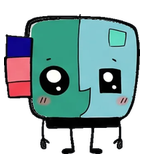

SBSTUDYBUDDY
ONLINE
DIGITAL SIDE-KICK // 01
Stay in the zone.
Your tiny study companion is ready to help you lock in.

QUEST BOARD
What are you working on today?
CURRENT QUEST
Add a task to begin
25:00
MOODREADY
BUDDY CHAT
Need a nudge?
Buddy Ask for a study plan or a break suggestion.
PREFERENCES
Companion settings
Tune your always-on-top desktop buddy.
The companion appears only while a quest is running. Pausing freezes the timer and health updates. Finishing a task awards 25 EXP and pauses the next quest. EXP levels up every 50 points.
Health loses 1 HP every 3 seconds after 15 seconds of mascot idle, and regenerates after 5 seconds of sustained desktop activity. Windows reports only whether input was recent; StudyBuddy does not record keystrokes or their contents. At 0 HP, restore health to wake your companion.